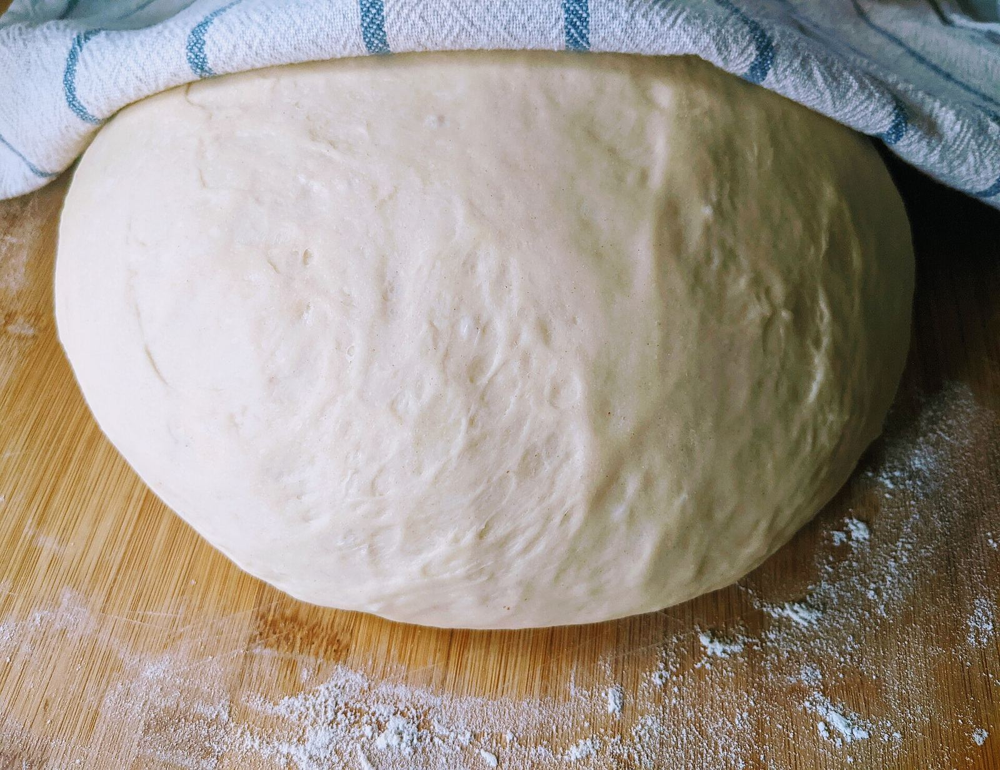
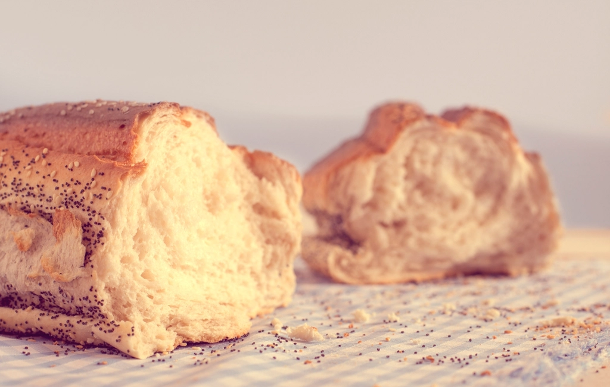

Boulangerie Komugi
朝いちばんに、
焼きたてを。
石窯で焼く、毎日食べたいパン。
ご挨拶
町のパン屋さんです。
住宅街の角にある、小さなパン屋です。毎朝4時から仕込んで、7時半にお店を開けます。
天然酵母の食パンやハード系、子どもにも人気の甘いパンまで、日替わりで30種類ほど焼いています。
おすすめ
店の定番

天然酵母のカンパーニュ
じっくり発酵させた、香ばしい丸パン。
¥780
ふわふわロールパン
朝食にもお弁当にも。人気No.1。
¥130
チョコのブリオッシュ
バターたっぷりのしっとり生地。
¥480
GALLERY
店のようす






営業案内
ご来店をお待ちしています
- 営業時間
- 7:30〜17:00(売り切れ次第終了)
- 定休日
- 日曜・月曜
- お取り置き
- お電話で承ります(前日まで)
- 駐車場
- 店前に2台(架空)